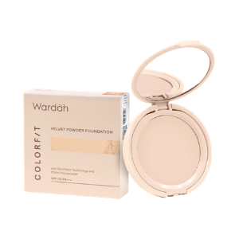
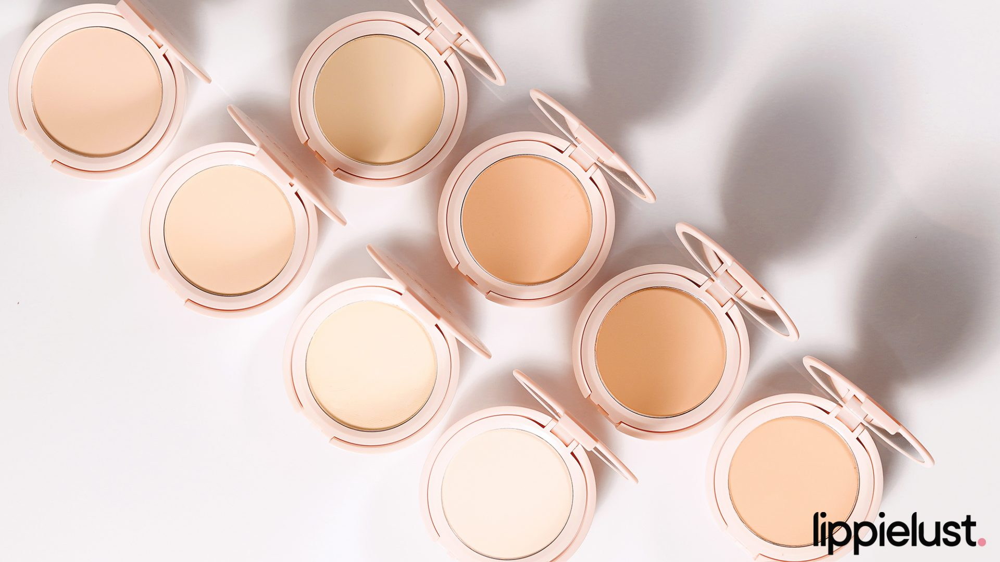

Wardah Colorfit Velvet Powder Foundation merupakan kombinasi foundation dan bedak yang terasa halus untuk memberikan coverage yang natural namun buildable (dapat diatur untuk medium hingga high coverage). Mampu memberikan finish yang dapat menyatu dengan baik wajah dan mampu menyamarkan pori serta menahan minyak secara tahan lama hingga 12 jam.
Product Information
Product Name: Wardah Colorfit Velvet Powder Foundation
Produced By: PT Paragon Technology and Innovation
Weight & Price 11 gr | Rp 69.000
Shades 8 shades
Packaging

Bagian depan box dari Wardah Colorfit Velvet Powder Foundation terdapat nama juga hint tekstur produk. Jika kita balik, terdapat informasi ingredients list, penjelasan singkat terkait produk dan logo halal. Klaim, barcode dan BPOM barcode bisa kita lihat di kedua sisi box.Seperti compact powder pada umumnya, produk ini memiliki desain rounded packaging berwarna creamy-pink. Jika kita buka, terdapat built-in mirror, the powder, dan sponge applicator berwarna putih terletak terpisah di bagian bawah.
Benefits
Warna menyatu sempurna: SkinMatch Technology – pigmen yang didesain khusus untuk menyatu sempurna dengan warna natural kulit
Long-lasting oil control: Matte Micropowder – mengontrol dan menyerap minyak pada wajah, memberikan hasil matte
Soft focus, menyamarkan pori: Membuat wajah tampak halus dan mampu menyamarkan pori
Our Review
Berbeda dari Wardah Colorfit Matte Foundation, Wardah Colorfit Velvet Powder Foundation bertipe pressed powder, kombinasi antara foundation dan juga bedak. Selain itu, Velvet Powder Foundation memiliki tekstur yang lebih terasa halus di wajah, walaupun dari segi coverage aku lebih suka Matte Foundation yang benar-benar bisa menutupi bekas-bekas jerawat di wajah. Wajahpun terlihat halus dan lebih menyatu dengan warna natural kulit.

Klaimnya, produk ini bisa mengontrol dan menyerap minyak di wajah hingga 12 jam. Hal ini tentu akan cocok bagi para pemilik kulit yang oily, atau yang ingin mendapatkan tampilan complexion yang matte sepanjang hari. Berbeda dari Wardah Colorfit Matte Foundation, Wardah Colorfit Velvet Powder Foundation memiliki perlindungan SPF 20 PA+++, sehingga bisa melindungi kulit dari bahaya sinar UVA&B untuk kamu yang sering beraktivitas di luar ruangan.